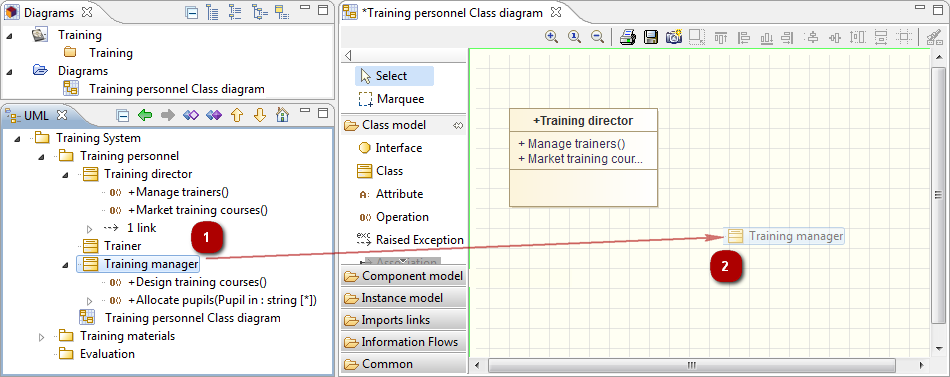

Diagrams can quickly become cluttered and consequently difficult to work with, if all model elements, their contents and associated links are visible. For this reason, Modelio lets you decide whether to show or mask diagram components and referenced elements.
Elements can be shown by:
dragging and dropping them from the “Model” view into a diagram
using the “Unmask” command in the context menu
defining an automatic unmask policy in the “Symbol” view
Elements can be masked by:
using the “Ctrl+M” shortcut in the diagram edition view
using the “Mask” command in the context menu
defining an automatic mask policy in the “Symbol” view

The “Symbol” view on an element allows you to define an automatic unmask policy for its internal elements, according to their visibility:
All: Show all elements
All public: Show only public elements
All non-private: Mask private elements
Manual: Show or mask elements individually
In Modelio diagrams, you can define a representation option for each and every diagram element in the Symbol view.